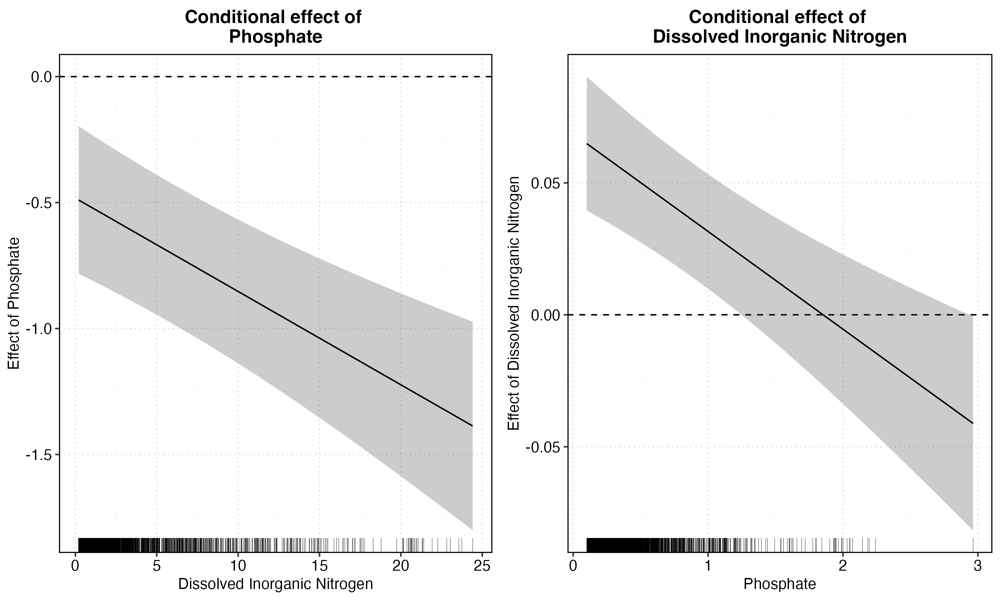

── Attaching core tidyverse packages ──────────────────────── tidyverse 2.0.0 ──
✔ dplyr 1.1.2 ✔ readr 2.1.4
✔ forcats 1.0.0 ✔ stringr 1.5.0
✔ ggplot2 3.4.3 ✔ tibble 3.2.1
✔ lubridate 1.9.2 ✔ tidyr 1.3.0
✔ purrr 1.0.2
── Conflicts ────────────────────────────────────────── tidyverse_conflicts() ──
✖ dplyr::filter() masks stats::filter()
✖ dplyr::lag() masks stats::lag()
ℹ Use the conflicted package (<http://conflicted.r-lib.org/>) to force all conflicts to become errors
here() starts at /Users/amandaherbst/Documents/github/eds222-final-proj
Attaching package: 'janitor'
The following objects are masked from 'package:stats':
chisq.test, fisher.test
Attaching package: 'tsibble'
The following object is masked from 'package:naniar':
pedestrian
The following object is masked from 'package:lubridate':
interval
The following objects are masked from 'package:base':
intersect, setdiff, union
Loading required package: fabletools
Attaching package: 'zoo'
The following object is masked from 'package:tsibble':
index
The following objects are masked from 'package:base':
as.Date, as.Date.numeric
Install package "strengejacke" from GitHub (`devtools::install_github("strengejacke/strengejacke")`) to load all sj-packages at once!Blog Post
To do: - get rid of warnings/messages - add figure captions - add references - edit writing/add more - edit yml - add cover image
Relationship between cholorphyll-a and nutrients in the Santa Barbara Channel
Background
Phytoplankton play a key role in both oceanic food webs and the global carbon cycle. Although they only make up 0.2% of the global primary producer biomass, phytoplankton are responsible for nearly half of Earth’s primary production (Field et al 1998). Every marine organism relies on phytoplankton directly or indirectly for fuel and through photosynthesis, phytoplankton convert inorganic carbon, CO2, into organic carbon. It is then essential to study them to understand how they can mitigate and/or be affected by climate change. Since all photosynthetically active phytoplankton use chlorophyll-a (Chl-a) pigment to produce their own fuel, Chl-a is commonly used as a proxy for phytoplankton biomass.
In order to grow and thrive, phytoplankton rely on certain nutrients–phosphate (PO4) and dissolved inorganic nitrogen (nitrate, nitrite, ammonium). It has been proven that on short timescales, such as weeks and months, the previously mentioned nutrients are dominant drivers of changes in chlorophyll-a concentration, with a directly proportional relationship (source?).
Info about the coast–coastal ocean waters are the most productive and have the most life but are also most vulnerable to climate change (source?).
While learning about the close relationship between chlorophyll-a and nutrients, I began to wonder if, with a large enough dataset, a statistically significant relationship could be characterized. I knew that my hometown, Santa Barbara, had a Long-Term Ecological Research project and
Data
The Santa Barbara Coastal Long-Term Ecological Research program has been conducting monthly nearshore cruises along the Santa Barbra channel at 9 (?) sites since 2000. Water samples are collected with a rosette sampler and many nutrients and water chemistry parameters are measured. The data is accessible to anyone on the EDI or DataOne websites, which is where I downloaded it. Included in this dataset are measurements of chlorophyll-a, phosphate, nitrate, nitrite, and ammonium concentrations, which I used for my analysis.
[insert map of sites or pic of channel]
Question
As mentioned above, phosphate and nitrogen are known to be key players in driving changes in chlorophyll-a concentration. Since the SBC LTER has almost 3000 observations of chl-a and nutrient concentrations from their 20 years of sampling, I wanted to investigate if there is a statistically significant overall relationship between chlorophyll-a and nutrient concentrations.
Results
Importing libraries
Importing Data
what if i just imported using the download link?? I downloaded the data from EDI
Data cleaning and preparation
Through piping, initial data cleaning was done on the same step as importing. The initial data frame was relatively tidy and I simply needed to replace any 99999 values with NA. Additionally, for some of the nutrient measurements, they were labeled “BDL” or below detection level, so I converted those to NA values as well. Since I am investigating the relationship between chlorphyll, phosphate and dissolved inorganic nitrogen, I needed to create a new column that was the sum of nitrite, nitrate and ammonium.
bottle <- read_delim("https://cn.dataone.org/cn/v2/resolve/https%3A%2F%2Fpasta.lternet.edu%2Fpackage%2Fdata%2Feml%2Fknb-lter-sbc%2F10%2F27%2F572816525903a898f686df5b64eb3852",
# BDL = below detection limit, so convert those to NA
na = "BDL",
show_col_types = FALSE) %>%
clean_names() %>%
# convert any 99999 value to NA values
replace_with_na_all(condition = ~.x == 99999) %>%
# two rows at station Q2 which is not in the meta data and a positive longitude...
filter(station != "Q2")Warning: One or more parsing issues, call `problems()` on your data frame for details,
e.g.:
dat <- vroom(...)
problems(dat)problems(bottle)
# bottle <- read_delim(here("data", "LTER_monthly_bottledata_20220930.txt"),
# BDL = below detection limit, so convert those to NA
# na = "BDL") %>% # select preferred nitrogen columns
bottle_nutrients <- bottle %>%
select(no2_no3_umol_l, ammonia_umol_l)
# convert any NAs to 0 for more accurate sums
bottle_nutrients[is.na(bottle_nutrients)] <- 0
# create column DIN as sum of the nitrogen components
bottle_nutrients <- bottle_nutrients %>%
mutate(din_umol_l = no2_no3_umol_l + ammonia_umol_l)
# convert and 0s back to NA
bottle_nutrients$din_umol_l[bottle_nutrients$din_umol_l == 0] <- NA
# create the data frame we want by adding DIN column and only selecting chl and nutrients
bottle_complete <- bottle %>%
cbind(din_umol_l = bottle_nutrients$din_umol_l) %>%
select(chl_a_ug_l, po4_umol_l, din_umol_l)Data exploration
Let’s check the distribution of chlorphyll-a concentrations before running a regression:
ggplot(data = bottle_complete) +
geom_histogram(aes(chl_a_ug_l),
fill = "darkgreen",
color = "white",
bins = 50) +
labs(x = "[Chlorophyll-a] (\u03BCg/L)",
y = "Frequency",
title = "Chl-a Distribution",
caption = "Fig 1. Distribution of chlorophyll-a concentrations in coastal water samples.") +
theme_bw() +
theme(plot.caption = element_text(hjust=0))Warning: Removed 72 rows containing non-finite values (`stat_bin()`).Let’s take the log!
It looks like the chlorophyll-a concentrations distribution has a positive skew and a long right tail. If we take the log of chlorophyll-a concentration, we will have a much closer to normal distribution and therefore can find a better model fit. So, before proceeding with the regression, a new column will be added with the log of chlorophyll-a concentrations.
# add log(chl-a) column
bottle_complete <- bottle_complete %>%
mutate(log_chla = log(chl_a_ug_l))
# check distributions again
ggplot(data = bottle_complete) +
geom_histogram(aes(log_chla),
fill = "darkgreen",
color = "white") +
labs(x = "log[Chlorophyll-a]",
y = "Frequency",
title = "log(chl-a) Distribution",
caption = "Fig 2. Distribution of the log of chlorophyll-a concentration.") +
theme_bw() +
theme(plot.caption = element_text(hjust=0)) `stat_bin()` using `bins = 30`. Pick better value with `binwidth`.Warning: Removed 72 rows containing non-finite values (`stat_bin()`).
Add q-q plots?
Regression
Now that the log of chlorophyll-a concentration is approximately normally-distributed, we can proceed with a multiple linear regression to answer the question. The phosphorous and nitrogen cycles are closely linked, and it has been proven that nitrogen in plants has increased their ability to absorb phosphate (source). For this reason, I am including an interaction term between phosphorous and dissolved inorganic nitrogen.
# multiple linear regression with interaction term
model <- lm(log_chla ~ po4_umol_l + din_umol_l + din_umol_l:po4_umol_l, data = bottle_complete)
# sjplot for good output
sjPlot::tab_model(model, digits = 3, show.se = TRUE,
title = "Table 1. Summary of log-linear multiple regression model with interaction term.", string.se = "SE") | log chla | ||||
| Predictors | Estimates | SE | CI | p |
| (Intercept) | 0.711 | 0.044 | 0.625 – 0.796 | <0.001 |
| po4 umol l | -0.482 | 0.150 | -0.777 – -0.188 | 0.001 |
| din umol l | 0.069 | 0.013 | 0.042 – 0.095 | <0.001 |
| po4 umol l × din umol l | -0.037 | 0.008 | -0.054 – -0.020 | <0.001 |
| Observations | 2473 | |||
| R2 / R2 adjusted | 0.021 / 0.020 | |||
Coefficient Interpretations
Looking at the p-values of the individual coefficient estimates, all estimates are significant at an alpha level of 0.01. Let’s interpret what each estimate means:
(Intercept): the exponential of the intercept (2.0354106) is the predicted concentration of chlorophyll-a in ug/L when the concentrations of both phosphate and dissolved inorganic nitrogen are zero.po4 umol l: a one micro mole per liter increase in phosphate changes the concentration of chlorophyll-a by -48.239429 percent, when there is no dissolved inorganic nitrogen in the water.din_umol_l: a one micro mole per liter increase in dissolved inorganic nitrogen changes the concentration of chlorophyll-a by 6.8619998 percent, when there is no phosphate in the water.po4 umol l x din umol l: Since both parameters in the interaction term are continuous variables, this coefficient describes the marginal effect of both nutrients on each other’s slope of their relationship with log(chlorophyll-a):- effect of phosphate: NA
Talk about the output - interpretations of coefficients - significance codes - p-values
Marginal effects
Since the interaction is between two continuous variables, the slope of one’s relationship with chlorphyll-a is conditional on the concentration. This is called the marginal effects. We can actually plot the marginal effects of phosphate and nitrogen on each other:
devtools::source_url("https://raw.githubusercontent.com/jkarreth/JKmisc/master/ggintfun.R")
ggintfun(obj = model, varnames = c("po4_umol_l", "din_umol_l"),
varlabs = c("Phosphate", "Dissolved Inorganic Nitrogen"),
title = FALSE, rug = TRUE,
twoways = TRUE) Fig 3. Marginal effects of phosphate (left) and dissolved inorganic nitrogen (right).
Conclusion
further work
References
Field, C. B., M. J., Behrenfeld, J. T., Randerson, and P. Falkowski. 1998. Primary production of the biosphere: Integrating terrestrial and oceanic components. Science 281: 237-240. doi:10.1126/science.281.5374.237